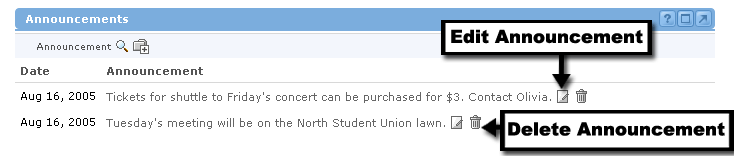

Edit or Remove an Announcement :Change your Content
:Change your Content
Editing an Announcement
When you add an announcement, it is not set in stone. You can change the content of your announcement at any time. To do so, follow these simple steps:
- In the Announcements channel, locate the announcement you would like to edit.
- Click the Edit icon next to the announcement.
- You will now see the announcement text in an editable text area. You can now change the announcement.
- Click the Spell Check link to verify the contents of your message.
- When all your changes are finished, click the Submit button.
- The edited announcement will now appear to every member of this offering.

Removing an Announcement
Sometimes it becomes necessary to remove announcements. If this is the case, follow these steps:
- In the Announcements channel, locate the announcement you would like to remove.
- Click the Delete icon next to the announcement.
- You will be prompted to confirm the deletion of the announcement, click the Yes radio button and click Submit to remove the announcement.